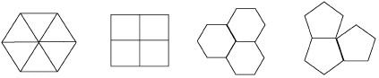

| Perhaps the simplest tessellations of the plane are those of the regular polygons. |
| To tessellate (tile) the plane, the polygons must overlap only along their edges and completely fill the plane. |
| To tile the plane with congruent copies of a single regular polygon, the polygon must be an equilateral triangle, a square, or a regular hexagon. |
| In order to be able to tile the plane, the interior angle of a regular polygon must evenly divide 360. Certainly, this is true for these three polygons but not for the pentagon. |
|  |
| Here is a proof that no other regular polygons tile the plane. |
Return to background.